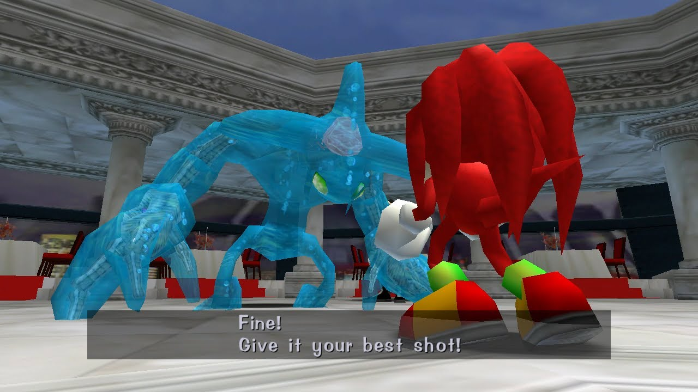
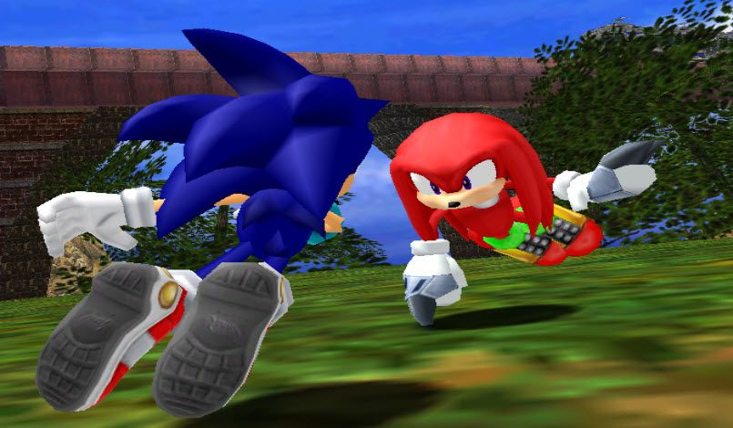
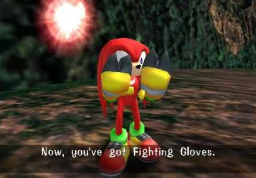
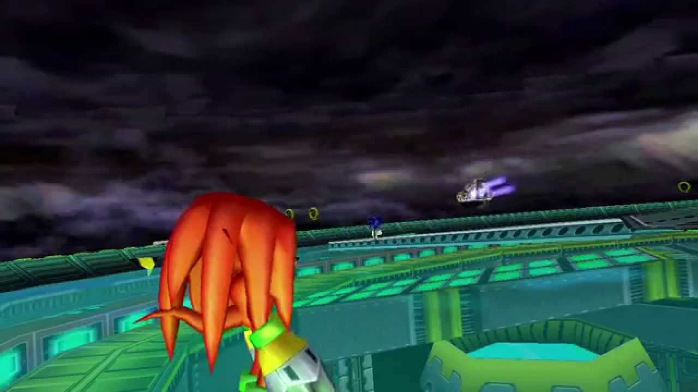
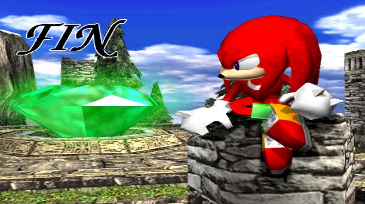

SADX - Campanha do Knuckles
É mais uma noite normal como qualquer outra, e Knuckles está em sua Angel Island protegendo a Master Emerald. A Egg Carrier aproxima-se da ilha, a unica coisa que ele sabe é que é seu dever proteger a esmeralda. De repente, ele ouve um barulho e ao olhar para trás ele percebe que ali há um ser feito de água. Atrás deste ser há também uma misteriosa luz. Knuckles pergunta a ele o que ele faz ali. Ele também nota que a Master Emerald está quebrada. Knuckles pergunta se foi ele quem fez isto. Ele não responde e Knuckles o ataca. Chaos salta e contra-ataca Knuckles, que vai escada abaixo. Quando Knuckles sobe ao altar novamente, Chaos foi embora.
Sua missão com Knuckles agora é simples: Encontrar os pedaços da Esmeralda que se espalharam por todos os lados. Vá até a prefeitura e destrua as barreiras para entrar em Speed Highway e procurar os primeiros fragmentos.
Stage 01 - Speed Highway
Todas as fases de Knuckles tem como objetivo achar três pedaços da Master Emerald. Ouça as dicas da luz rosa para saber a localização dos pedaços e use seu radar que apita conforme você chega mais perto das esmeraldas, indo respectivamente das cores azul, a verde, a amarelo e por fim vermelho. Quando o radar estiver no vermelho, isso indica que a esmeralda está muito proxima. Algumas peças podem estar escondidas dentro de estruturas da fase, inimigos ou nas plataformas altas. Na Speed Highway, procure ficar no alto dos prédios, pois embaixo há os carros de polícia que vao te acertar sempre.
Terminando a primeira fase, vá para a área do casino. Haverá uma parede com anéis. Escale e pegue os anéis. Salte e plane em direção ao botão que abre Casinopolis e entre nela
Stage 02 - Cassinopolis
Como dito anteriormente, use o radar e procure as esmeraldas. Dentro dessa fase, há maiores possibilidades delas estarem dentro de inimigos, ou dentro da estatua do Sonic. Para destruir a estatua, procure uma pequena rachadura que possui nela proximas aos pés e ataque lá, a estatua será destruida com apenas um hit.
Ao fim da fase, uma luz envolverá Knuckles e o levará para um local onde ele nunca esteve, embora lhe pareça familiar. Siga em linha reta e você encontrará Tikal tentando convencer seu pai a não invadir outros povos. Após ouvir a converça, Knuckles voltará para Station Square. Agora siga em direção ao hotel. Knuckles verá Eggman carregando uma jóia brilhante. Você segue o cientista e exige que ele devolva a Master Emerald. Porém Eggman tem uma Chaos Emerald. O doutor resolve testar Chaos 2 usando Knuckles. Prepare-se para a luta.
Chaos 02
Quando Chaos 02 virar uma bolha gigante, dê um soco nele ou o ataque enquanto plana, isso fará ele voltar ao normal, então, cause dano de verdade dele planando. O ataque com as garras também o deixa vulneravel, após desviar, também é possivel ataca-lo ali. Alem disso, apenas plane/pule para desviar dele e o ataque quando possivel. Quatro acertos e ele é derrotado.
Depois de vencer Chaos, Eggman diz a Knuckles que Sonic também está atrás das partes da Master Emerald. Knuckles fica meio confuso e continua sua busca na Mystic Ruins. Alerta de Spoiler: Eggman está enganando Knuckles... DENOVO!.
Quando chegar em Mystic Ruins, vá em direção a area que fica o Chao Garden, então entre numa caverna ali perto, que irá se trancar quando você entrar, e pegue as Shovel Claws. Isto dará a Knuckles a habilidade de cavar. Cave no local com o símbolo de Eggman, pegue o item e destrua a gaiola do macaco com ele, se libertando dali. Agora pegue outro botão desse, e vá até a caverna de gelo e vá em direção a Angel Island. Use botão para destruir o macaco e abrir a entrada para Red Mountain.
\Stage 03 - Red Mountain
Agora temos mais 3 pedaços da Esmeralda Mestra para encontrar. Como você já tem as Shovel Claws, nesta fase algumas esmeraldas podem estar enterradas. Apenas explore o local e cuidado para não cair no abismo, eventualmente você encontrará os fragmentos da Master Emerald.
Vá para a área do lago de Mystic Ruins. Lá você encontrará Sonic com uma esmeralda verde, talvez um fragmento da Master? Knuckles exige a esmeralda de Sonic, mas este nega. Enfrente-o então.
Aqui não tem nenhum segredo, acerte 3 ataques em Sonic e ele será derrotado. Cuidado com o Homing Attack e o Light Speed Dash. Procure não planar pois Sonic usará o Homing Attack e ambos cairão no chão. Sonic perde as esmeraldas e Eggman aparece para roubá-las. Knuckles percebe que aquelas esmeraldas são Esmeraldas do Caos. Knuckles foi enganado, que surpresa... Eggman invoca Chaos e lhe dá as esmeraldas. Agora faça Chaos 4 comer poeira!
Chaos 04
O primeiro ataque de Chaos 04 é uma onda de energia. Pule para desviar dela. Como nas campanhas anteriores, você deve esperar Chaos 4 emergir para poder acertá-lo. Quando isto ocorrer, plane em direção a ele para acerta-lo Quando ele estiver embaixo d'água, mantenha-se constantemente em movimento para não ser acertado por ele, apenas fique planando por ai até ele subir novamente.
Egg Carrier aparece no céu, Eggman foge e Sonic e Tails vão atrás dele. Knuckles não vai, você ainda tem uns assuntos para resolver. Vá para a área da floresta. Quando chegar na floresta tropical, plane para a direita de Knuckles e escale pela parede. Você poderá notar que há uma plataforma no paredão, acima da cabana de Big. Ali estarão as Fightning Gloves. Isto dará a Knuckles o Maximum Heat Knucles Attack.
Volte até o carrinho acima da escadaria no inicio da area e pegue a estatueta dourada e leve-a até o templo, colocando-a na parte de trás da pirâmide. Agora vá para frente e siga para a esquerda no caminho perto do abismo. Fique atento à parede na sua esquerda pois ali à uma caverna escondida. Entre nela e cave na área indicada para achar a estátua de prata. Coloque-a na pirâmide junto a estatua dourada e a fase Lost World vai se abrir.
Stage 04 - Lost World
Aqui as peças da Master Emerald são bem escondidas. Algumas ficam no topo da fase, outras embaixo da areia. É uma fase grande por isso vasculhe bem. Você pode ter a sorte delas estarem dentro de caixas ou inimigos. Explore bem o local e escale as paredes para ter melhor visão do mapa e procurar os fragmentos.
Terminando a fase, a luz novamente ronda Knuckles. Desta vez Knuckles se encontra numa outra área parecida com a Angel Island. Siga até o topo do altar. Tikal está falando com alguém, pedindo para deixar o lugar pois seu pai pretende dominar este lugar sagrado. A resposta é negativa, então Tikal tenta falar com seu pai mais uma vez. Knuckles volta em frente ao altar da Angel Island. Ainda faltam 3 pedaços para restaurar a esmeralda, e os ultimos pedaços estão na Egg Carrier. Mas como chegar lá? Nesse momento E-102 Gamma aparece e Knuckles resolve segui-lo. Vá até a área da floresta e até a base de Eggman. A Egg Carrier decola e Knuckles se encontra na área superior da nave. A Master Emerald está por perto. Siga para a frente da nave e ela se transformará. Vá para a piscina e entre na porta no fundo da piscina. Entre na Sky Deck.
Stage 05 - Sky Deck
Procure os últimos três fragmentos que faltam. Aqui você terá que controlar as mudanças de direção da nave para poder achar as peças. Use a alavanca que fica logo no início da fase. Os pedaços podem estar em cima do guindaste, dentro das comportas, ou nas áreas feitas de cascalho que você precisará cavar. Procure bem e termine a fase. Knuckles enfim pegou os 3 fragmentos restantes, mas antes de sair da fase aquela luzinha volta. Knuckles está novamente naquele altar estranho, mas há algo errado. Siga em frente. Tikal estará desmaiada. Ela tentou pará-los, mas tudo ficou pior. Quando Knuckles olha ele percebe que é a Master Emerald que está no altar, mas nesse momento tudo acaba. Saia da sala da piscina. Knuckles finalmente encontrou todos os pedaços da Master Emerald, mas ele ainda se pergunta sobre aquele monstro. Uma luz vinda do centro da nave cega Knuckles. Vá para o centro da nave e encontre Sonic, que está lutando contra Chaos 06, e Sonic vence. Eggman foge e Sonic vai atrás dele. Quando Knuckles ia voltando para a sua ilha, ele percebe que Chaos 6 ainda não foi derrotado. Enfrente-o e o finalize.
Chaos 06
Existem duas areas da fase que estão destruidas soltando um vapor preto, se pisar lá você perde aneis. De resto, é a mesma gameplay do Sonic. Acerte um dos congeladores e atire-os dentro da boca do bicho. Ele irá congelar e você poderá acertá-lo. Vá desviando dos golpes de Chaos 06 e jogue os congeladores quando puder. Repita o processo até vencer Chaos 06 e terminar a campanha de Knuckles. Chaos foi derrotado, a Egg Carrier destruída e a Master Emerald restaurada. Knuckles enfim pode descansar
